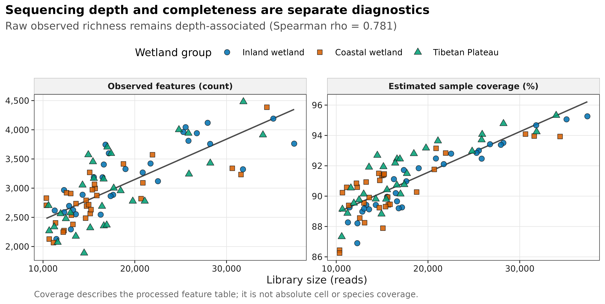
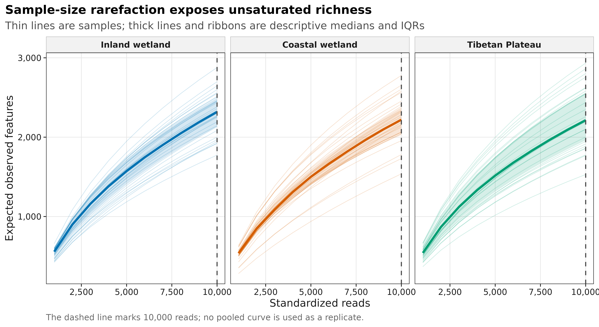
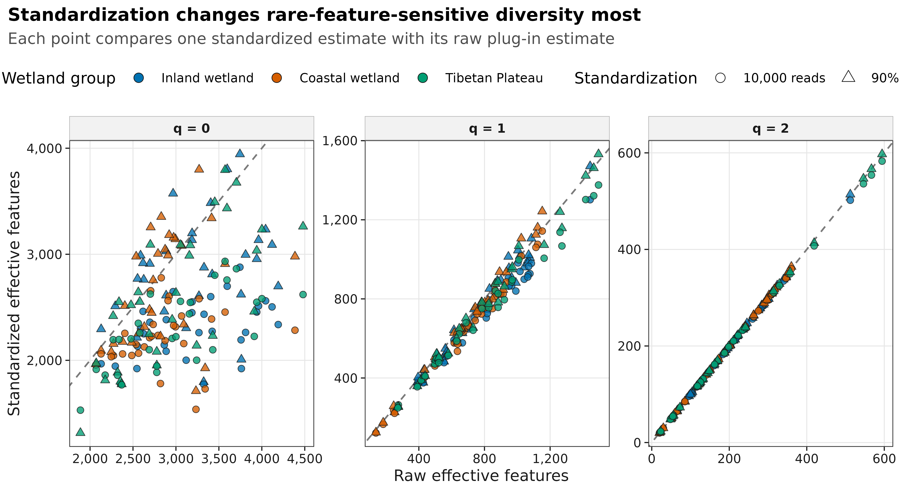

options(timeout = 600)
data_url <- "https://raw.githubusercontent.com/petemeng/microbiome-best-practices/3cb6a817e0c73ab7ecbec1cedc1ad80cbb9ecfaa/"
input_files <- c(
"data/small/metadata.tsv",
"data/small/otutab.tsv",
"data/small/taxonomy.tsv"
)
for (path in input_files) {
dir.create(dirname(path), recursive = TRUE, showWarnings = FALSE)
if (!file.exists(path)) download.file(paste0(data_url, path), path, mode = "wb", quiet = TRUE)
}19 Alpha 指数全家 + 稀释曲线 + 抽平之争 + Hill numbers
19.1 Alpha 多样性到底在量化什么？
Alpha 多样性（alpha diversity）描述的是单个样本内部检测到多少类群，以及丰度在这些类群之间分配得多均匀。论文里常见的 Shannon 箱线图只是最终摘要；在比较分组之前，还应先回答三个测量问题：样本测了多深、测得多完整、结论是否依赖某一种指数或标准化方法。
本页使用 An 等中国湿地研究随 microeco 2.0.0 分发的真实 16S 数据：13,628 个 OTU、90 个样本、1,619,670 条 reads，内陆湿地、沿海湿地和青藏高原湿地各 30 个样本。原始数据论文与 microeco 软件论文提供了可引用的数据来源。
重要先记住四个结论
- 不要只报一个 Shannon。 至少同时给 richness、evenness 或 dominant-sensitive 指标，并写清每个指标的定义。
- 原始 richness 不能脱离测序深度解释。 本数据的 raw Observed 与 library size 的 Spearman ()。
- 抽平不是一个适用于所有任务的默认预处理。 等 reads 可用于可视化或特定距离分析的敏感性比较，但不应把随机抽平表继续交给差异丰度计数模型。
- Hill numbers 统一了量纲。 (q=0) 是 observed richness，(q=1) 是 ((H’))，(q=2) 是 inverse Simpson；数值都表示“同等多样的有效 feature 数”。
本数据的 library size 为 10,364–37,374 reads。若所有样本都按 10,000 reads 比较，可保留 90/90 个样本，但相当于不利用 44.4% 的已测 reads。改按 90% coverage 比较时，56 个样本需要 interpolation，34 个样本需要短程 extrapolation，最大推算 effort 为原 library size 的 1.453 倍。两条路径都应连同目标值和代价一起报告。
19.2 下载并读取本次分析的数据
需要 R，以及 dplyr、ggplot2、iNEXT、jsonlite、phyloseq、ragg、scales、svglite、systemfonts、vegan。本次使用中国湿地的 OTU count 表、分类表和样本信息表。
在一个新建的文件夹中运行以下代码，下载文件后按文中的顺序继续分析：
set.seed(20260721)
required_packages <- c(
"digest", "dplyr", "ggplot2", "iNEXT", "jsonlite", "phyloseq",
"ragg", "readr", "scales", "svglite", "systemfonts", "tibble",
"tidyr", "vegan"
)
missing_packages <- required_packages[
!vapply(required_packages, requireNamespace, logical(1), quietly = TRUE)
]
stopifnot(length(missing_packages) == 0L)
font_pub <- "sans"
font_info <- systemfonts::font_info(font_pub)
stopifnot(
nrow(font_info) >= 1L,
nzchar(font_info$family[[1L]]),
file.exists(font_info$path[[1L]]),
isTRUE(font_info$scalable[[1L]])
)
pal_pub <- c(
blue = "#0072B2",
orange = "#E69F00",
green = "#009E73",
vermillion = "#D55E00",
purple = "#CC79A7",
sky = "#56B4E9",
yellow = "#F0E442",
grey = "#6B7280"
)
scale_color_pub <- function(..., values = unname(pal_pub)) {
ggplot2::scale_color_manual(..., values = values)
}
scale_fill_pub <- function(..., values = unname(pal_pub)) {
ggplot2::scale_fill_manual(..., values = values)
}
theme_pub <- function(base_size = 10, base_family = font_pub) {
ggplot2::theme_bw(base_size = base_size, base_family = base_family) +
ggplot2::theme(
panel.grid.minor = ggplot2::element_blank(),
panel.grid.major = ggplot2::element_line(
colour = "#E6E6E6", linewidth = 0.25
),
axis.text = ggplot2::element_text(colour = "#1A1A1A"),
axis.title = ggplot2::element_text(colour = "#1A1A1A"),
axis.ticks = ggplot2::element_line(
colour = "#1A1A1A", linewidth = 0.3
),
plot.title.position = "plot",
plot.title = ggplot2::element_text(
face = "bold", size = ggplot2::rel(1.15)
),
plot.subtitle = ggplot2::element_text(colour = "#4D4D4D"),
plot.caption = ggplot2::element_text(
colour = "#666666", hjust = 0
),
strip.background = ggplot2::element_rect(
fill = "#F2F2F2", colour = "#B3B3B3", linewidth = 0.3
),
strip.text = ggplot2::element_text(face = "bold"),
legend.key = ggplot2::element_blank(),
legend.position = "top"
)
}
save_pub <- function(
plot,
file_base,
width = 183,
height = 100,
units = "mm",
dpi = 600,
write_svg = TRUE,
write_tiff = TRUE,
base_family = font_pub
) {
dir.create(dirname(file_base), recursive = TRUE, showWarnings = FALSE)
ggplot2::ggsave(
paste0(file_base, ".pdf"), plot,
width = width, height = height, units = units,
device = grDevices::cairo_pdf,
family = base_family,
bg = "white"
)
if (isTRUE(write_svg)) {
ggplot2::ggsave(
paste0(file_base, ".svg"), plot,
width = width, height = height, units = units,
device = svglite::svglite,
bg = "white"
)
}
ggplot2::ggsave(
paste0(file_base, ".png"), plot,
width = width, height = height, units = units,
dpi = dpi,
device = ragg::agg_png,
bg = "white"
)
if (isTRUE(write_tiff)) {
ggplot2::ggsave(
paste0(file_base, ".tiff"), plot,
width = width, height = height, units = units,
dpi = dpi,
device = ragg::agg_tiff,
compression = "lzw",
bg = "white"
)
}
invisible(plot)
}19.2.1 读取三件套并按 ID 对齐
下面的主流程在普通工作站约需 1 分钟，峰值内存低于 1 GB。otutab 必须是 feature × sample 的非负整数表；这里不在 richness 计算前做 prevalence 或 abundance 过滤。
read_keyed_tsv <- function(path) {
x <- readr::read_tsv(
path,
show_col_types = FALSE,
progress = FALSE,
name_repair = "minimal",
na = character()
)
ids <- as.character(x[[1L]])
stopifnot(!anyDuplicated(ids))
out <- as.data.frame(x[-1L], check.names = FALSE)
rownames(out) <- ids
out
}
input_paths <- c(
otutab = "data/small/otutab.tsv",
taxonomy = "data/small/taxonomy.tsv",
metadata = "data/small/metadata.tsv"
)
expected_sha256 <- c(
otutab = "76fa79c38da889f35978dc86da4641a270961746709ff38049ee5f67e3c6f7a3",
taxonomy = "725280bb9a0cd9bda7b540022e92af945ceed52527f8b2d220b055b4489f6901",
metadata = "df24771dccf27607ddf922c6bca2cafa876d946fbe2e09d14b601accce66ba64"
)
observed_sha256 <- vapply(
input_paths,
digest::digest,
character(1),
algo = "sha256",
serialize = FALSE,
file = TRUE
)
stopifnot(identical(observed_sha256, expected_sha256))
otutab <- read_keyed_tsv(input_paths[["otutab"]])
taxonomy <- read_keyed_tsv(input_paths[["taxonomy"]])
metadata <- read_keyed_tsv(input_paths[["metadata"]])
otutab <- data.matrix(otutab)
storage.mode(otutab) <- "numeric"
feature_ids <- rownames(otutab)
sample_ids <- colnames(otutab)
stopifnot(
setequal(feature_ids, rownames(taxonomy)),
setequal(sample_ids, rownames(metadata)),
all(is.finite(otutab)),
all(otutab >= 0),
all(abs(otutab - round(otutab)) < .Machine$double.eps^0.5),
all(colSums(otutab) > 0)
)
taxonomy <- taxonomy[feature_ids, , drop = FALSE]
metadata <- metadata[sample_ids, , drop = FALSE]
dim(otutab)
sum(otutab)
otutab[1:5, 1:5]
taxonomy[1:5, , drop = FALSE]
head(metadata)[1] 13628 90
[1] 1619670
S1 S2 S3 S4 S5
OTU_4272 1 0 1 1 0
OTU_236 1 4 0 2 35
OTU_399 9 2 2 4 4
OTU_1556 5 18 7 3 2
OTU_32 83 9 19 8 102
Kingdom Phylum
OTU_4272 k__Bacteria p__Firmicutes
OTU_236 k__Bacteria p__Chloroflexi
OTU_399 k__Bacteria p__Proteobacteria
OTU_1556 k__Bacteria p__Acidobacteria
OTU_32 k__Archaea p__Miscellaneous Crenarchaeotic Group
Class Order Family Genus
OTU_4272 c__Bacilli o__Bacillales f__ g__
OTU_236 c__ o__ f__ g__
OTU_399 c__Betaproteobacteria o__Nitrosomonadales f__Nitrosomonadaceae g__
OTU_1556 c__Acidobacteria o__Subgroup 17 f__ g__
OTU_32 c__ o__ f__ g__
Species
OTU_4272 s__
OTU_236 s__
OTU_399 s__
OTU_1556 s__
OTU_32 s__
Group Type Saline
S1 IW NE Non-saline soil
S2 IW NE Non-saline soil
S3 IW NE Non-saline soil
S4 IW NE Non-saline soil
S5 IW NE Non-saline soil
S6 IW NE Non-saline soil标准三件套也可以组装成 phyloseq 对象，但原始表仍是本页的计算起点：
ps <- phyloseq::phyloseq(
phyloseq::otu_table(otutab, taxa_are_rows = TRUE),
phyloseq::tax_table(as.matrix(taxonomy)),
phyloseq::sample_data(metadata)
)
psphyloseq-class experiment-level object
otu_table() OTU Table: [ 13628 taxa and 90 samples ]
sample_data() Sample Data: [ 90 samples by 3 sample variables ]
tax_table() Taxonomy Table: [ 13628 taxa by 7 taxonomic ranks ]下载完整 R 脚本。脚本包含数据下载、计算和图形导出。
首次使用时安装 R 包
install.packages(c(
"digest", "dplyr", "ggplot2", "iNEXT", "jsonlite", "ragg",
"readr", "scales", "svglite", "systemfonts", "tibble",
"tidyr", "vegan"
))
if (!requireNamespace("BiocManager", quietly = TRUE)) {
install.packages("BiocManager")
}
BiocManager::install("phyloseq")19.3 每个指数到底在测什么
19.3.1 Richness、evenness 和 dominance 不是同一个问题
设样本中第 (i) 个 feature 的相对丰度为 (p_i)，检测到的 feature 数为 (S_{obs})。常见指标可整理为：
| 指标 | 定义或直觉 | 单位 | 对稀有 feature 的敏感度 |
|---|---|---|---|
| Observed | 检测到的非零 feature 数 | features | 高 |
| Chao1 | 用 singleton/doubleton 修正未检出 richness | features | 很高 |
| Shannon | (-p_ip_i) | entropy | 中等 |
| Simpson | vegan 中为 (1-p_i^2) |
probability | 低 |
| Pielou | (H’/(S_{obs})) | 0–1 ratio | 中等 |
| Hill (q=0) | (S_{obs}) | effective features | 高 |
| Hill (q=1) | ((H’)) | effective features | 中等 |
| Hill (q=2) | (1/p_i^2) | effective features | 低 |
Observed 只计算“见过多少个”；Shannon 同时受 richness 和均匀度影响；Simpson 更强调优势 feature。它们不应被互换命名。例如，vegan::diversity(index = "simpson") 返回的是 (1-p_i^2)，而不是 inverse Simpson。
深入：Chao1 与 sample coverage 为什么都盯着 singleton
若 (f_1) 和 (f_2) 分别表示样本中只出现 1 次和 2 次的 feature 数，经典 Chao1 的核心修正项与 (f_1^2/(2f_2)) 有关；软件会对 (f_2=0) 等边界情况使用修正公式。singleton 越多，未观察 richness 的证据通常越强。
Good’s sample coverage 的直观估计为：
[ C = 1- ]
其中 (n) 是该样本的总 reads。它估计下一条 read 落在已观测 feature 中的概率，而不是“环境中 90% 的细胞或物种已经被测到”。PCR 偏好、16S 拷贝数、引物覆盖和分类数据库误差仍然存在。
在计算 Observed、Chao1 和 coverage 前删除 singleton，会直接改写这些估计量所需的信息。低丰度过滤可用于其他下游任务，但必须与原始 richness 估计分开。
19.3.2 稀释曲线、相同读数和相同覆盖度回答不同问题
Sample-size rarefaction 问：“如果每个样本只使用相同数量的 reads，期望看到多少 diversity？”它把测序量固定下来，但不同样本在该深度下可能具有不同完整度。
Coverage-based standardization 问：“如果每个样本都比较到相同的样本完整度，期望 diversity 是多少？”它允许对测得更完整的样本做 interpolation，也允许对不够完整的样本做有限 extrapolation。
本页使用解析 rarefaction / extrapolation，不生成随机抽平 count table。这样重复运行不会因一次随机丢 reads 而改变结果，也不会诱使人把抽平表误用于后续差异丰度模型。
注记稀释曲线接近平台不等于测序绝对充分
曲线只描述当前 feature 定义和处理流程下，继续增加 reads 对观测 richness 的预期收益。平台外观还受横轴范围、singleton、测序错误处理和分类分辨率影响。应同时报告 library size、coverage、目标深度或目标 coverage，以及 extrapolation 范围。
19.3.3 Hill numbers 把三个指标放回同一量纲
Hill number 的一般形式为：
[ {}^qD=(_i p_iq){1/(1-q)} ]
当 (q) 增大，稀有 feature 的权重降低：
- (q=0)：每个被检测 feature 权重相同，对稀有 feature 最敏感；
- (q=1)：极限形式为 ((H’))，兼顾 richness 与 evenness；
- (q=2)：为 inverse Simpson，主要反映优势 feature。
“Hill (q=1=800)”可以读作：该样本的 Shannon 多样性，相当于 800 个等丰度 feature。这个解释比直接比较 entropy 值更直观。
19.4 从测序深度比较到相同完整度
19.4.1 在未过滤计数上计算完整 Alpha 指数表
community <- t(otutab)
library_size <- rowSums(community)
observed <- vegan::specnumber(community)
frequency_one <- rowSums(community == 1)
frequency_two <- rowSums(community == 2)
goods_coverage <- 1 - frequency_one / library_size
estimate_r <- vegan::estimateR(community)
shannon <- vegan::diversity(community, index = "shannon")
simpson <- vegan::diversity(community, index = "simpson")
inverse_simpson <- vegan::diversity(community, index = "invsimpson")
pielou <- shannon / log(observed)
group_labels <- c(
IW = "Inland wetland",
CW = "Coastal wetland",
TW = "Tibetan Plateau"
)
group_palette <- c(
"Inland wetland" = pal_pub[["blue"]],
"Coastal wetland" = pal_pub[["vermillion"]],
"Tibetan Plateau" = pal_pub[["green"]]
)
group_shapes <- c(
"Inland wetland" = 21,
"Coastal wetland" = 22,
"Tibetan Plateau" = 24
)
alpha_raw <- data.frame(
SampleID = sample_ids,
Group = metadata$Group,
GroupLabel = unname(group_labels[metadata$Group]),
LibrarySize = as.numeric(library_size),
Singletons = as.integer(frequency_one),
Doubletons = as.integer(frequency_two),
GoodsCoverage = as.numeric(goods_coverage),
Observed = as.numeric(observed),
Chao1 = as.numeric(estimate_r["S.chao1", ]),
Chao1SE = as.numeric(estimate_r["se.chao1", ]),
Shannon = as.numeric(shannon),
Simpson = as.numeric(simpson),
Pielou = as.numeric(pielou),
Hill0 = as.numeric(observed),
Hill1 = as.numeric(exp(shannon)),
Hill2 = as.numeric(inverse_simpson),
stringsAsFactors = FALSE
)
alpha_raw$GroupLabel <- factor(
alpha_raw$GroupLabel,
levels = names(group_palette)
)
phyloseq_alpha <- suppressWarnings(
phyloseq::estimate_richness(
ps,
measures = c("Observed", "Chao1", "Shannon", "Simpson", "InvSimpson")
)
)
phyloseq_alpha <- phyloseq_alpha[sample_ids, , drop = FALSE]
stopifnot(
max(abs(alpha_raw$Observed - phyloseq_alpha$Observed)) < 1e-10,
max(abs(alpha_raw$Chao1 - phyloseq_alpha$Chao1)) < 1e-8,
max(abs(alpha_raw$Shannon - phyloseq_alpha$Shannon)) < 1e-10,
max(abs(alpha_raw$Simpson - phyloseq_alpha$Simpson)) < 1e-10,
max(abs(alpha_raw$Hill2 - phyloseq_alpha$InvSimpson)) < 1e-10,
max(abs(alpha_raw$Hill1 - exp(alpha_raw$Shannon))) < 1e-10,
max(abs(alpha_raw$Hill2 - 1 / (1 - alpha_raw$Simpson))) < 1e-8
)
depth_observed_spearman <- suppressWarnings(
cor(alpha_raw$LibrarySize, alpha_raw$Observed, method = "spearman")
)
alpha_raw[1:6, ]
c(
minimum_depth = min(alpha_raw$LibrarySize),
median_depth = median(alpha_raw$LibrarySize),
maximum_depth = max(alpha_raw$LibrarySize),
minimum_coverage = min(alpha_raw$GoodsCoverage),
median_coverage = median(alpha_raw$GoodsCoverage),
maximum_coverage = max(alpha_raw$GoodsCoverage),
depth_observed_spearman = depth_observed_spearman
) SampleID Group GroupLabel LibrarySize Singletons Doubletons GoodsCoverage
1 S1 IW Inland wetland 25542 1788 686 0.9299977
2 S2 IW Inland wetland 26764 1761 607 0.9342027
3 S3 IW Inland wetland 12843 1415 430 0.8898233
4 S4 IW Inland wetland 13280 1405 397 0.8942018
5 S5 IW Inland wetland 17640 1592 465 0.9097506
6 S6 IW Inland wetland 22525 1621 489 0.9280355
Observed Chao1 Chao1SE Shannon Simpson Pielou Hill0 Hill1
1 4044 6369.441 149.2980 6.981852 0.9964281 0.8406816 4044 1076.9107
2 3941 6489.816 167.2749 6.948722 0.9965333 0.8392998 3941 1041.8178
3 2696 5017.125 173.3009 6.722170 0.9961937 0.8509589 2696 830.6183
4 2625 5103.166 188.0596 6.602460 0.9954565 0.8386380 2625 736.9057
5 2886 5603.674 192.6181 6.331258 0.9940729 0.7946228 2886 561.8631
6 3119 5798.612 187.1700 6.345092 0.9937780 0.7886738 3119 569.6897
Hill2
1 279.9661
2 288.4613
3 262.7199
4 220.0958
5 168.7154
6 160.7189
minimum_depth median_depth maximum_depth
1.036400e+04 1.564450e+04 3.737400e+04
minimum_coverage median_coverage maximum_coverage
8.625181e-01 9.080346e-01 9.532234e-01
depth_observed_spearman
7.808171e-01 本数据的 raw coverage 为 86.25%–95.32%，但 raw Observed 与 depth 的相关仍达到 0.781。高 coverage 不代表 richness 已对测序深度完全不敏感。
19.4.2 用解析稀释得到 10,000-read 比较值和逐样本曲线
10,000 reads 低于所有样本的最浅 library，因此全部样本都可做 interpolation。iNEXT::estimateD() 直接返回期望 diversity，不创建一次随机抽样后的新 count table。
abundance_list <- setNames(
lapply(seq_len(nrow(community)), function(i) {
as.numeric(community[i, community[i, ] > 0])
}),
sample_ids
)
data_info <- iNEXT::DataInfo(
abundance_list,
datatype = "abundance"
)
data_info <- data_info[
match(sample_ids, data_info$Assemblage),
,
drop = FALSE
]
alpha_raw$iNEXTCoverage <- data_info$SC
stopifnot(
max(abs(alpha_raw$GoodsCoverage - alpha_raw$iNEXTCoverage)) <= 0.0001
)
size_target <- 10000L
set.seed(20260721)
size_estimate <- iNEXT::estimateD(
abundance_list,
q = c(0, 1, 2),
datatype = "abundance",
base = "size",
level = size_target,
nboot = 0
)
alpha_size <- data.frame(
SampleID = size_estimate$Assemblage,
Group = metadata[size_estimate$Assemblage, "Group"],
GroupLabel = unname(
group_labels[metadata[size_estimate$Assemblage, "Group"]]
),
TargetReads = as.numeric(size_estimate$m),
Method = size_estimate$Method,
Order = as.integer(size_estimate$Order.q),
SampleCoverage = size_estimate$SC,
HillD = size_estimate$qD,
stringsAsFactors = FALSE
)
alpha_size$GroupLabel <- factor(
alpha_size$GroupLabel,
levels = names(group_palette)
)
stopifnot(
length(unique(alpha_size$SampleID)) == 90L,
identical(sort(unique(alpha_size$Order)), 0:2),
identical(unique(alpha_size$Method), "Rarefaction")
)
depth_grid <- seq(1000L, size_target, by = 1000L)
rarefaction_matrix <- vapply(
depth_grid,
function(depth) as.numeric(
vegan::rarefy(community, sample = depth)
),
numeric(nrow(community))
)
rownames(rarefaction_matrix) <- sample_ids
colnames(rarefaction_matrix) <- as.character(depth_grid)
rarefaction_curve_data <- data.frame(
SampleID = rep(sample_ids, times = length(depth_grid)),
TargetReads = rep(depth_grid, each = length(sample_ids)),
ExpectedObserved = as.numeric(rarefaction_matrix),
stringsAsFactors = FALSE
)
rarefaction_curve_data$Group <- metadata[
rarefaction_curve_data$SampleID,
"Group"
]
rarefaction_curve_data$GroupLabel <- factor(
unname(group_labels[rarefaction_curve_data$Group]),
levels = names(group_palette)
)
size_cost <- data.frame(
SamplesRetained = length(unique(alpha_size$SampleID)),
ReadsAvailable = sum(community),
ReadsRepresented = size_target * length(unique(alpha_size$SampleID)),
FractionNotUsed = 1 -
size_target * length(unique(alpha_size$SampleID)) / sum(community)
)
size_cost SamplesRetained ReadsAvailable ReadsRepresented FractionNotUsed
1 90 1619670 900000 0.444331319.4.3 在 90% 覆盖度下比较，并检查是否需要过度外推
目标 coverage 不是越高越好。阈值越高，需要 extrapolation 的样本越多，推算距离也越长。这里先比较 0.88、0.90、0.92，再选择最大 effort ratio 不超过 1.5 的 0.90 作为展示值。
coverage_levels <- c(0.88, 0.90, 0.92)
coverage_sensitivity <- do.call(
rbind,
lapply(coverage_levels, function(level) {
set.seed(20260721)
estimate <- iNEXT::estimateD(
abundance_list,
q = 0,
datatype = "abundance",
base = "coverage",
level = level,
nboot = 0
)
observed_reads <- as.numeric(library_size[estimate$Assemblage])
data.frame(
TargetCoverage = level,
Samples = nrow(estimate),
RarefactionSamples = sum(estimate$Method == "Rarefaction"),
ObservedSamples = sum(estimate$Method == "Observed"),
ExtrapolationSamples = sum(estimate$Method == "Extrapolation"),
MedianImpliedReads = median(estimate$m),
MaximumEffortRatio = max(estimate$m / observed_reads)
)
})
)
coverage_sensitivity
coverage_target <- 0.90
set.seed(20260721)
coverage_estimate <- iNEXT::estimateD(
abundance_list,
q = c(0, 1, 2),
datatype = "abundance",
base = "coverage",
level = coverage_target,
nboot = 0
)
alpha_coverage <- data.frame(
SampleID = coverage_estimate$Assemblage,
Group = metadata[coverage_estimate$Assemblage, "Group"],
GroupLabel = unname(
group_labels[metadata[coverage_estimate$Assemblage, "Group"]]
),
ImpliedReads = coverage_estimate$m,
ObservedReads = as.numeric(
library_size[coverage_estimate$Assemblage]
),
EffortRatio = coverage_estimate$m / as.numeric(
library_size[coverage_estimate$Assemblage]
),
Method = coverage_estimate$Method,
Order = as.integer(coverage_estimate$Order.q),
TargetCoverage = coverage_estimate$SC,
HillD = coverage_estimate$qD,
stringsAsFactors = FALSE
)
alpha_coverage$GroupLabel <- factor(
alpha_coverage$GroupLabel,
levels = names(group_palette)
)
coverage_q0 <- alpha_coverage[
alpha_coverage$Order == 0L,
,
drop = FALSE
]
stopifnot(
sum(coverage_q0$Method == "Rarefaction") == 56L,
sum(coverage_q0$Method == "Extrapolation") == 34L,
max(coverage_q0$EffortRatio) <= 1.5,
max(abs(alpha_coverage$TargetCoverage - coverage_target)) < 1e-8
)
c(
rarefaction_samples = sum(coverage_q0$Method == "Rarefaction"),
extrapolation_samples = sum(coverage_q0$Method == "Extrapolation"),
median_implied_reads = median(coverage_q0$ImpliedReads),
maximum_effort_ratio = max(coverage_q0$EffortRatio)
) TargetCoverage Samples RarefactionSamples ObservedSamples
1 0.88 90 85 0
2 0.90 90 56 0
3 0.92 90 30 0
ExtrapolationSamples MedianImpliedReads MaximumEffortRatio
1 5 10517.47 1.183416
2 34 14007.66 1.452755
3 60 18938.82 1.784849
rarefaction_samples extrapolation_samples median_implied_reads
56.000000 34.000000 14007.661219
maximum_effort_ratio
1.452755 19.4.4 比较 Hill orders 对标准化的敏感性
raw_hill <- rbind(
data.frame(
SampleID = alpha_raw$SampleID,
Order = 0L,
HillD = alpha_raw$Hill0
),
data.frame(
SampleID = alpha_raw$SampleID,
Order = 1L,
HillD = alpha_raw$Hill1
),
data.frame(
SampleID = alpha_raw$SampleID,
Order = 2L,
HillD = alpha_raw$Hill2
)
)
raw_hill$Group <- metadata[raw_hill$SampleID, "Group"]
raw_hill$GroupLabel <- unname(group_labels[raw_hill$Group])
safe_spearman <- function(x, y) {
suppressWarnings(cor(x, y, method = "spearman"))
}
rank_rows <- list()
for (order_q in 0:2) {
raw_q <- raw_hill[
raw_hill$Order == order_q,
c("SampleID", "HillD")
]
names(raw_q)[[2L]] <- "RawHillD"
size_q <- alpha_size[
alpha_size$Order == order_q,
c("SampleID", "HillD")
]
names(size_q)[[2L]] <- "SizeHillD"
coverage_q <- alpha_coverage[
alpha_coverage$Order == order_q,
c("SampleID", "HillD")
]
names(coverage_q)[[2L]] <- "CoverageHillD"
joined <- Reduce(
function(x, y) merge(x, y, by = "SampleID", sort = FALSE),
list(raw_q, size_q, coverage_q)
)
rank_rows[[length(rank_rows) + 1L]] <- data.frame(
Order = order_q,
Comparison = c(
"Raw vs 10,000 reads",
"Raw vs 90% coverage",
"10,000 reads vs 90% coverage"
),
SpearmanRho = c(
safe_spearman(joined$RawHillD, joined$SizeHillD),
safe_spearman(joined$RawHillD, joined$CoverageHillD),
safe_spearman(joined$SizeHillD, joined$CoverageHillD)
)
)
}
rank_stability <- do.call(rbind, rank_rows)
rank_stability Order Comparison SpearmanRho
1 0 Raw vs 10,000 reads 0.5440245
2 0 Raw vs 90% coverage 0.5456955
3 0 10,000 reads vs 90% coverage 0.9383792
4 1 Raw vs 10,000 reads 0.9906161
5 1 Raw vs 90% coverage 0.9899576
6 1 10,000 reads vs 90% coverage 0.9952751
7 2 Raw vs 10,000 reads 0.9999177
8 2 Raw vs 90% coverage 0.9999012
9 2 10,000 reads vs 90% coverage 0.9999506对 (q=0)，raw 与标准化后的样本排序相关只有约 0.54；对 (q=1) 约为 0.99，对 (q=2) 几乎为 1。也就是说，测序量和 coverage 的选择主要影响稀有 feature 驱动的 richness，而优势 feature 驱动的结论更稳定。这个结果是诊断，不是选择 (q=2) 来回避问题的理由。
19.4.5 生成组别描述表，不在这里做组间检验
standardized_hill <- rbind(
transform(
raw_hill[c("SampleID", "Group", "GroupLabel", "Order", "HillD")],
Standardization = "Raw counts"
),
transform(
alpha_size[c("SampleID", "Group", "GroupLabel", "Order", "HillD")],
Standardization = "10,000 reads"
),
transform(
alpha_coverage[c("SampleID", "Group", "GroupLabel", "Order", "HillD")],
Standardization = "90% coverage"
)
)
standardized_hill$Standardization <- factor(
standardized_hill$Standardization,
levels = c("Raw counts", "10,000 reads", "90% coverage")
)
group_descriptive_summary <- standardized_hill |>
dplyr::group_by(Standardization, Group, GroupLabel, Order) |>
dplyr::summarise(
Samples = dplyr::n(),
Median = median(HillD),
Q25 = quantile(HillD, 0.25),
Q75 = quantile(HillD, 0.75),
.groups = "drop"
)
group_descriptive_summary# A tibble: 27 × 8
Standardization Group GroupLabel Order Samples Median Q25 Q75
<fct> <chr> <chr> <int> <int> <dbl> <dbl> <dbl>
1 Raw counts CW Coastal wetland 0 30 2806. 2544 3048.
2 Raw counts CW Coastal wetland 1 30 768. 636. 865.
3 Raw counts CW Coastal wetland 2 30 238. 117. 308.
4 Raw counts IW Inland wetland 0 30 3228 2738 3755.
5 Raw counts IW Inland wetland 1 30 855. 581. 1013.
6 Raw counts IW Inland wetland 2 30 209. 133. 276.
7 Raw counts TW Tibetan Plateau 0 30 2866. 2395. 3446.
8 Raw counts TW Tibetan Plateau 1 30 758. 511. 969.
9 Raw counts TW Tibetan Plateau 2 30 166. 123. 240.
10 10,000 reads CW Coastal wetland 0 30 2220. 2060. 2377.
# ℹ 17 more rows中位数和四分位距只描述当前 90 个样本。独立样本、配对或重复测量需要不同的检验设计；零膨胀、协变量和批次也不能用一个未经设计核查的 Wilcoxon 检验代替。
19.5 用稀释曲线与Hill profile解释多样性
19.5.1 深度与完整度必须分成两个 panel
depth_plot_data <- rbind(
data.frame(
SampleID = alpha_raw$SampleID,
GroupLabel = alpha_raw$GroupLabel,
LibrarySize = alpha_raw$LibrarySize,
Metric = "Observed features (count)",
Value = alpha_raw$Observed
),
data.frame(
SampleID = alpha_raw$SampleID,
GroupLabel = alpha_raw$GroupLabel,
LibrarySize = alpha_raw$LibrarySize,
Metric = "Estimated sample coverage (%)",
Value = 100 * alpha_raw$iNEXTCoverage
)
)
depth_plot_data$Metric <- factor(
depth_plot_data$Metric,
levels = c(
"Observed features (count)",
"Estimated sample coverage (%)"
)
)
depth_plot <- ggplot2::ggplot(
depth_plot_data,
ggplot2::aes(x = LibrarySize, y = Value)
) +
ggplot2::geom_smooth(
method = "lm",
formula = y ~ x,
se = FALSE,
colour = "#4D4D4D",
linewidth = 0.55
) +
ggplot2::geom_point(
ggplot2::aes(fill = GroupLabel, shape = GroupLabel),
colour = "#1A1A1A",
stroke = 0.3,
size = 2,
alpha = 0.86
) +
ggplot2::facet_wrap(~Metric, scales = "free_y", nrow = 1L) +
ggplot2::scale_fill_manual(values = group_palette) +
ggplot2::scale_shape_manual(values = group_shapes) +
ggplot2::scale_x_continuous(labels = scales::label_comma()) +
ggplot2::scale_y_continuous(
labels = scales::label_comma(accuracy = 1)
) +
ggplot2::labs(
title = "Sequencing depth and completeness are separate diagnostics",
subtitle = paste0(
"Raw observed richness remains depth-associated (Spearman rho = ",
sprintf("%.3f", depth_observed_spearman), ")"
),
x = "Library size (reads)",
y = NULL,
fill = "Wetland group",
shape = "Wetland group",
caption = paste(
"Coverage describes the processed feature table;",
"it is not absolute cell or species coverage."
)
) +
theme_pub(base_size = 9) +
ggplot2::theme(legend.position = "top")
save_pub(
depth_plot,
"figures/19-depth-completeness-audit",
width = 183,
height = 92
)
19.5.2 稀释曲线必须以样本为单位
curve_summary <- rarefaction_curve_data |>
dplyr::group_by(GroupLabel, TargetReads) |>
dplyr::summarise(
Median = median(ExpectedObserved),
Q25 = quantile(ExpectedObserved, 0.25),
Q75 = quantile(ExpectedObserved, 0.75),
.groups = "drop"
)
rarefaction_plot <- ggplot2::ggplot(
rarefaction_curve_data,
ggplot2::aes(x = TargetReads, y = ExpectedObserved)
) +
ggplot2::geom_line(
ggplot2::aes(group = SampleID, colour = GroupLabel),
linewidth = 0.25,
alpha = 0.18
) +
ggplot2::geom_ribbon(
data = curve_summary,
ggplot2::aes(
x = TargetReads,
ymin = Q25,
ymax = Q75,
fill = GroupLabel
),
inherit.aes = FALSE,
alpha = 0.16,
colour = NA
) +
ggplot2::geom_line(
data = curve_summary,
ggplot2::aes(y = Median, colour = GroupLabel),
linewidth = 0.9
) +
ggplot2::geom_vline(
xintercept = size_target,
linetype = 2,
colour = "#4D4D4D",
linewidth = 0.45
) +
ggplot2::facet_wrap(~GroupLabel, nrow = 1L) +
ggplot2::scale_colour_manual(values = group_palette, guide = "none") +
ggplot2::scale_fill_manual(values = group_palette, guide = "none") +
ggplot2::scale_x_continuous(labels = scales::label_comma()) +
ggplot2::scale_y_continuous(labels = scales::label_comma()) +
ggplot2::labs(
title = "Sample-size rarefaction exposes unsaturated richness",
subtitle = paste(
"Thin lines are samples; thick lines and ribbons are",
"descriptive medians and IQRs"
),
x = "Standardized reads",
y = "Expected observed features",
caption = paste(
"The dashed line marks 10,000 reads;",
"no pooled curve is used as a replicate."
)
) +
theme_pub(base_size = 9) +
ggplot2::theme(legend.position = "none")
save_pub(
rarefaction_plot,
"figures/19-rarefaction-curves",
width = 183,
height = 100
)
19.5.3 用相同坐标单位比较两种标准化
raw_for_plot <- raw_hill[c("SampleID", "Order", "HillD")]
names(raw_for_plot)[[3L]] <- "RawHillD"
size_for_plot <- alpha_size[
c("SampleID", "GroupLabel", "Order", "HillD")
]
size_for_plot$Standardization <- "10,000 reads"
coverage_for_plot <- alpha_coverage[
c("SampleID", "GroupLabel", "Order", "HillD")
]
coverage_for_plot$Standardization <- "90% coverage"
comparison_plot_data <- rbind(size_for_plot, coverage_for_plot)
comparison_plot_data <- merge(
comparison_plot_data,
raw_for_plot,
by = c("SampleID", "Order"),
sort = FALSE
)
comparison_plot_data$OrderLabel <- factor(
paste0("q = ", comparison_plot_data$Order),
levels = paste0("q = ", 0:2)
)
comparison_plot_data$Standardization <- factor(
comparison_plot_data$Standardization,
levels = c("10,000 reads", "90% coverage")
)
standardization_plot <- ggplot2::ggplot(
comparison_plot_data,
ggplot2::aes(x = RawHillD, y = HillD)
) +
ggplot2::geom_abline(
slope = 1,
intercept = 0,
linetype = 2,
colour = "#7A7A7A",
linewidth = 0.45
) +
ggplot2::geom_point(
ggplot2::aes(fill = GroupLabel, shape = Standardization),
colour = "#1A1A1A",
stroke = 0.28,
size = 1.65,
alpha = 0.78
) +
ggplot2::facet_wrap(~OrderLabel, scales = "free", nrow = 1L) +
ggplot2::scale_fill_manual(values = group_palette) +
ggplot2::scale_shape_manual(
values = c("10,000 reads" = 21, "90% coverage" = 24)
) +
ggplot2::guides(
fill = ggplot2::guide_legend(
override.aes = list(shape = 21, size = 2.4, alpha = 1)
),
shape = ggplot2::guide_legend(
override.aes = list(fill = "white", size = 2.4, alpha = 1)
)
) +
ggplot2::scale_x_continuous(labels = scales::label_comma()) +
ggplot2::scale_y_continuous(labels = scales::label_comma()) +
ggplot2::labs(
title = paste(
"Standardization changes rare-feature-sensitive",
"diversity most"
),
subtitle = paste(
"Each point compares one standardized estimate with",
"its raw plug-in estimate"
),
x = "Raw effective features",
y = "Standardized effective features",
fill = "Wetland group",
shape = "Standardization"
) +
theme_pub(base_size = 9) +
ggplot2::theme(legend.position = "top")
save_pub(
standardization_plot,
"figures/19-standardization-comparison",
width = 183,
height = 100
)
19.5.4 用对数坐标展示 Hill 多样性，但按原始数值解释
coverage_profile <- alpha_coverage
coverage_profile$OrderLabel <- coverage_profile$Order
coverage_profile_summary <- coverage_profile |>
dplyr::group_by(GroupLabel, OrderLabel) |>
dplyr::summarise(
Median = median(HillD),
Q25 = quantile(HillD, 0.25),
Q75 = quantile(HillD, 0.75),
.groups = "drop"
)
hill_plot <- ggplot2::ggplot(
coverage_profile,
ggplot2::aes(x = OrderLabel, y = HillD)
) +
ggplot2::geom_line(
ggplot2::aes(group = SampleID, colour = GroupLabel),
linewidth = 0.25,
alpha = 0.16
) +
ggplot2::geom_ribbon(
data = coverage_profile_summary,
ggplot2::aes(
x = OrderLabel,
ymin = Q25,
ymax = Q75,
fill = GroupLabel,
group = GroupLabel
),
inherit.aes = FALSE,
alpha = 0.14,
colour = NA
) +
ggplot2::geom_line(
data = coverage_profile_summary,
ggplot2::aes(
y = Median,
group = GroupLabel,
colour = GroupLabel
),
linewidth = 0.95
) +
ggplot2::geom_point(
data = coverage_profile_summary,
ggplot2::aes(y = Median, fill = GroupLabel),
shape = 21,
colour = "#1A1A1A",
stroke = 0.3,
size = 2.2
) +
ggplot2::scale_colour_manual(values = group_palette, guide = "none") +
ggplot2::scale_fill_manual(values = group_palette) +
ggplot2::scale_x_continuous(
breaks = 0:2,
labels = c(
"q = 0\nrare taxa",
"q = 1\nbalanced",
"q = 2\ndominant taxa"
)
) +
ggplot2::scale_y_log10(labels = scales::label_comma()) +
ggplot2::labs(
title = paste(
"Hill profiles put all three orders in",
"effective-feature units"
),
subtitle = "Diversity standardized to 90% sample coverage",
x = "Hill order",
y = "Effective features (log scale)",
fill = "Wetland group",
caption = paste(
"Lines and IQRs are descriptive; group hypothesis tests",
"are not performed here."
)
) +
theme_pub(base_size = 9) +
ggplot2::theme(legend.position = "top")
save_pub(
hill_plot,
"figures/19-hill-profile",
width = 183,
height = 92
)
19.5.5 对导出文件做机器回验
完整验证器会核对输入 SHA-256、包版本、指标公式、phyloseq/vegan 数值一致性、coverage sensitivity、随机边界、PDF 字体嵌入、SVG 文本节点、位图像素、实际 ppi、物理尺寸和 TIFF LZW 压缩：
Rscript --vanilla scripts/validate_alpha_diversity.R \
--project-root . \
--input-dir data/small \
--output-dir results/19-alpha-diversity \
--figure-dir figures项目内存在审计结果时，下面代码会强制要求 193 项全部通过；单独复制正文代码时，不需要该结果目录也能完成前面的计算和出图。
audit_summary_path <- paste0(
"results/19-alpha-diversity/",
"alpha-diversity-summary.json"
)
if (file.exists(audit_summary_path)) {
audit_summary <- jsonlite::read_json(
audit_summary_path,
simplifyVector = TRUE
)
stopifnot(
audit_summary$checks_total == 193L,
audit_summary$checks_passed == 193L,
audit_summary$checks_failed == 0L,
audit_summary$graphics$primary_figures == 4L,
audit_summary$graphics$format_files == 16L
)
unlist(audit_summary[c(
"checks_total",
"checks_passed",
"checks_failed"
)])
} checks_total checks_passed checks_failed
193 193 0 19.6 常见坑
注意审稿人最常追问的八件事
- 只报 Shannon，不写定义。 Shannon entropy 与 Hill (q=1) 数值不同；Simpson 与 inverse Simpson 也不同。
- 在 Observed/Chao1 前过滤 singleton。 这会直接删除 richness 与 coverage 估计所需的信息，使结果被人为压低。
- 把原始 richness 当成可直接比较的表型。 先画 richness–depth 关系，并报告测序量或 coverage 标准化策略。
- 抽到全队列最浅样本却不报告代价。 应报告目标 reads、保留样本数和不再利用的 reads 比例。
- 把一次随机抽平表继续用于差异丰度。 计数模型通常需要原始 counts 和自己的 library-size 处理；不要把可视化用的抽平表当成统一输入。
- 看到曲线像平台就宣布“测序饱和”。 横轴范围、singleton、feature definition 和误差处理都会改变曲线外观。
- 把 pooled group curve 当作重复样本。 推断单位是独立样本，不是把 30 个样本加总后的一条曲线。
- 把 90% sample coverage 写成环境物种覆盖 90%。 这里的 coverage 仅针对处理后的 reads × feature 表。
警告为什么这里不加星号和 P 值
当前图中的粗线、IQR 和组中位数只用于描述。组间推断必须先确定独立、配对、重复测量或多协变量设计，再选择相应模型并处理多重比较。先看描述图再不断尝试检验，也会产生选择性报告风险。
19.7 报告多样性指数与标准化的方法与限制
下面英文可直接替换 feature 类型、目标深度和目标 coverage：
Alpha diversity was calculated from the unfiltered sample-by-feature count table before prevalence or abundance filtering. Per-sample library size, singleton and doubleton counts, observed richness, bias-corrected Chao1 richness, Shannon entropy, Simpson diversity (1 minus Simpson concentration), Pielou evenness, and Good’s sample coverage were recorded. Diversity was additionally expressed as Hill numbers of orders q = 0, 1, and 2, corresponding to observed richness, exp(Shannon entropy), and inverse Simpson concentration, respectively. Sample-size-based rarefaction was evaluated analytically at 10,000 reads, retaining all 90 samples. Coverage-based interpolation/extrapolation was performed with iNEXT 3.0.2 at 90% sample coverage; 56 samples required interpolation and 34 required extrapolation, with a maximum extrapolation effort of 1.453 times the observed library size. No randomly rarefied count table was retained for downstream differential-abundance modelling. Group summaries in this analysis were descriptive and no between-group hypothesis test was performed.
若使用 ASV，应把 feature 替换为 ASV；若 0.90 coverage 会导致过长 extrapolation，应报告实际选用的阈值和敏感性分析，不能照抄上述数字。
19.8 将多样性指数与标准化用于自己的研究
19.8.1 只替换三件套路径和分组列
input_paths <- c(
otutab = "your_project/otutab.tsv",
taxonomy = "your_project/taxonomy.tsv",
metadata = "your_project/metadata.tsv"
)
group_col <- "Treatment"
otutab <- read_keyed_tsv(input_paths[["otutab"]])
taxonomy <- read_keyed_tsv(input_paths[["taxonomy"]])
metadata <- read_keyed_tsv(input_paths[["metadata"]])
stopifnot(
setequal(rownames(otutab), rownames(taxonomy)),
setequal(colnames(otutab), rownames(metadata)),
group_col %in% colnames(metadata)
)
metadata$AnalysisGroup <- factor(metadata[[group_col]])最低输入要求：
otutab：行是 ASV/OTU，列是样本，单元格为原始非负整数 reads；taxonomy：行 ID 与otutab完全一致；本分析不按分类层级聚合，但仍保留它作为标准输入和结果解释依据；metadata：行是样本，至少包含分组列；图中若有中文分组名，先 recode 成英文；- 样本或 feature 顺序不一致时，按 ID 显式重排，不能只取交集后假定顺序正确。
19.8.2 不要机械照抄 10,000 reads
先检查 sort(colSums(otutab))。目标 reads 至少要说明：
- 有多少样本低于目标并会被排除或需要 extrapolation；
- 每个样本会舍弃或不利用多少 reads；
- richness 排序在多个目标深度下是否稳定；
- 这个标准化表是否仅用于 diversity/距离，而不是所有下游模型。
19.8.3 Coverage 目标也要做 sensitivity analysis
至少比较 3 个相邻目标，例如 0.85、0.90、0.95，并记录每个目标下的 interpolation/extrapolation 样本数、median implied reads 和 maximum effort ratio。若结论只在长程 extrapolation 下出现，应降低目标、增加测序，或把不确定性写进结论。
19.8.4 组间检验还需要研究设计信息
三件套足以计算 Alpha 指数，但正式推断还要从 metadata 确认：
- 独立样本还是同一受试者/地点的重复测量；
- 是否存在配对、批次、时间点、笼位、家庭或中心效应；
- 连续协变量与预先指定的交互项；
- 主要指标、主要对比和多重比较范围。
这些信息决定后续使用独立样本检验、配对检验、混合模型还是协变量调整模型。
19.9 参考
- An J, Liu C, Wang Q, et al. Soil bacterial community structure in Chinese wetlands. Geoderma. 2019;337:290–299. doi:10.1016/j.geoderma.2018.09.035
- Liu C, Cui Y, Li X, Yao M. microeco: an R package for data mining in microbial community ecology. FEMS Microbiology Ecology. 2021;97(2):fiaa255. doi:10.1093/femsec/fiaa255
- Hill MO. Diversity and evenness: a unifying notation and its consequences. Ecology. 1973;54(2):427–432. doi:10.2307/1934352
- Chao A, Jost L. Coverage-based rarefaction and extrapolation: standardizing samples by completeness rather than size. Ecology. 2012;93(12):2533–2547. doi:10.1890/11-1952.1
- Chao A, Gotelli NJ, Hsieh TC, et al. Rarefaction and extrapolation with Hill numbers: a framework for sampling and estimation in species diversity studies. Ecological Monographs. 2014;84(1):45–67. doi:10.1890/13-0133.1
- Hsieh TC, Ma KH, Chao A. iNEXT: an R package for rarefaction and extrapolation of species diversity (Hill numbers). Methods in Ecology and Evolution. 2016;7(12):1451–1456. doi:10.1111/2041-210X.12613
- Willis AD. Rarefaction, alpha diversity, and statistics. Frontiers in Microbiology. 2019;10:2407. doi:10.3389/fmicb.2019.02407
- McMurdie PJ, Holmes S. Waste not, want not: why rarefying microbiome data is inadmissible. PLOS Computational Biology. 2014;10(4):e1003531. doi:10.1371/journal.pcbi.1003531
- McMurdie PJ, Holmes S. phyloseq: an R package for reproducible interactive analysis and graphics of microbiome census data. PLOS ONE. 2013;8(4):e61217. doi:10.1371/journal.pone.0061217
- Oksanen J, Simpson GL, Blanchet FG, et al.
vegan: Community Ecology Package. CRAN package page